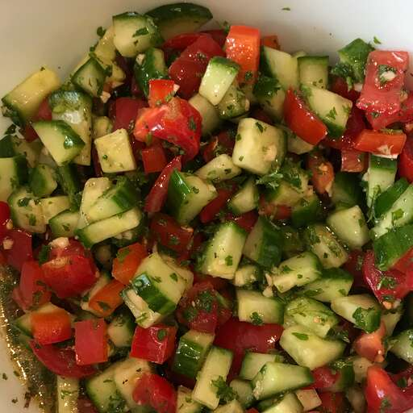

Salad Recipe

Description
Palestinian salad can typically be found at the many falafel street stands
all over Palestine. It is served on its own as a side dish or inside a
pita sandwich wrap. This fresh, light, and colorful salad is sure to
become a favorite for your family. Chopped tomatoes, cucumbers, onions,
and parsley combine with a drizzled dressing of lemon juice, olive oil,
garlic, and mint leaves. Goes great in a pita with falafel, hummus, and
tahini, but also works as a side dish with any middle eastern, Greek, or
even north African food.
Ingredients
- 6 cucumbers, diced
- 4 roma (plum) tomatoes, seeded and diced
- 5 green onions, sliced
- 1 red bell pepper, seeded and diced
- ⅓ cup chopped garlic
- 1 cup chopped fresh parsley
- ½ cup minced fresh mint leaves
- ½ cup olive oil
- 2 tablespoons fresh lemon juice
- 1 tablespoon salt
- 1 tablespoon ground black pepper
Steps
-
Toss the cucumbers, tomatoes, onions, bell pepper, garlic, parsley, and
mint together in a bowl. Drizzle the olive oil and lemon juice over the
salad and toss to coat. Season with salt and pepper to serve.